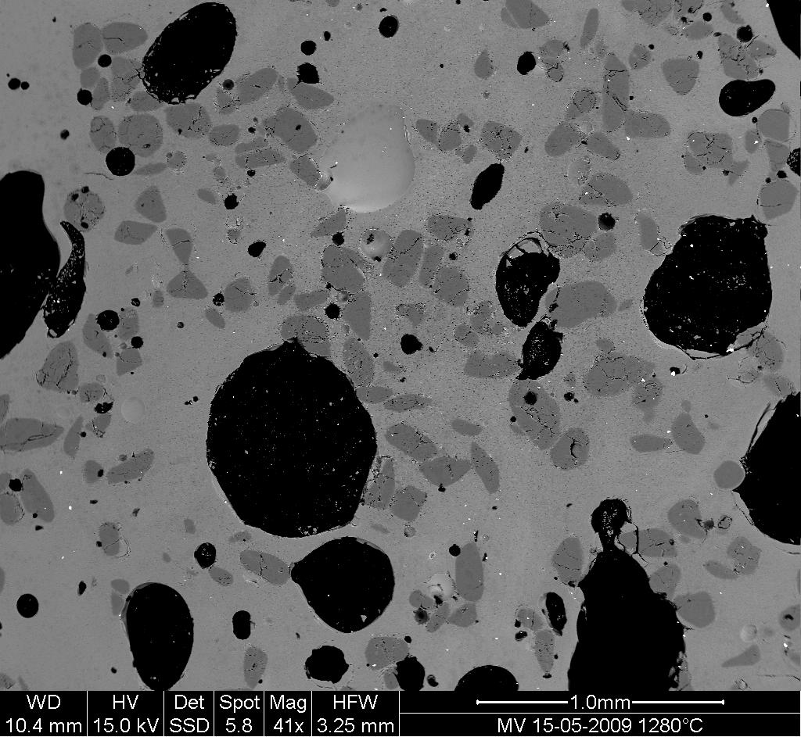
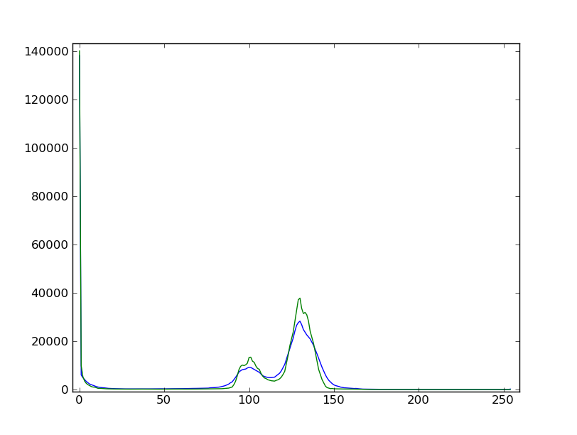
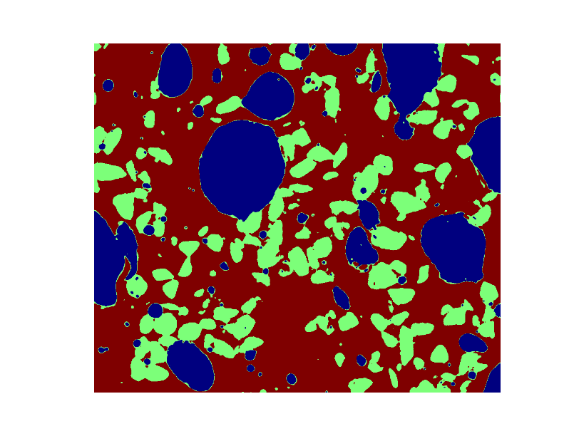
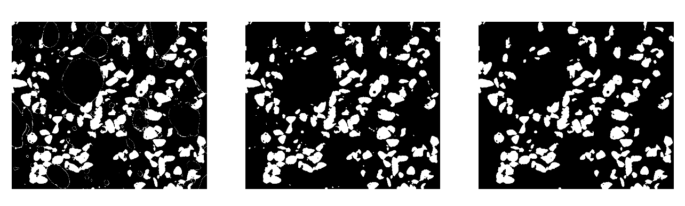

>>> import numpy as np
>>> import matplotlib.pyplot as plt
>>> import scipy as sp
1.5.11.4. Example of solution for the image processing exercise: unmolten grains in glass¶
Open the image file MV_HFV_012.jpg and display it. Browse through the keyword arguments in the docstring of
imshowto display the image with the “right” orientation (origin in the bottom left corner, and not the upper left corner as for standard arrays).>>> dat = plt.imread('data/MV_HFV_012.jpg')
Crop the image to remove the lower panel with measure information.
>>> dat = dat[:-60]
Slightly filter the image with a median filter in order to refine its histogram. Check how the histogram changes.
>>> filtdat = sp.ndimage.median_filter(dat, size=(7,7)) >>> hi_dat = np.histogram(dat, bins=np.arange(256)) >>> hi_filtdat = np.histogram(filtdat, bins=np.arange(256))
Using the histogram of the filtered image, determine thresholds that allow to define masks for sand pixels, glass pixels and bubble pixels. Other option (homework): write a function that determines automatically the thresholds from the minima of the histogram.
>>> void = filtdat <= 50 >>> sand = np.logical_and(filtdat > 50, filtdat <= 114) >>> glass = filtdat > 114
Display an image in which the three phases are colored with three different colors.
>>> phases = void.astype(int) + 2*glass.astype(int) + 3*sand.astype(int)
Use mathematical morphology to clean the different phases.
>>> sand_op = sp.ndimage.binary_opening(sand, iterations=2)
Attribute labels to all bubbles and sand grains, and remove from the sand mask grains that are smaller than 10 pixels. To do so, use
sp.ndimage.sumornp.bincountto compute the grain sizes.>>> sand_labels, sand_nb = sp.ndimage.label(sand_op) >>> sand_areas = np.array(sp.ndimage.sum(sand_op, sand_labels, np.arange(sand_labels.max()+1))) >>> mask = sand_areas > 100 >>> remove_small_sand = mask[sand_labels.ravel()].reshape(sand_labels.shape)
Compute the mean size of bubbles.
>>> bubbles_labels, bubbles_nb = sp.ndimage.label(void) >>> bubbles_areas = np.bincount(bubbles_labels.ravel())[1:] >>> mean_bubble_size = bubbles_areas.mean() >>> median_bubble_size = np.median(bubbles_areas) >>> mean_bubble_size, median_bubble_size (1699.875, 65.0)